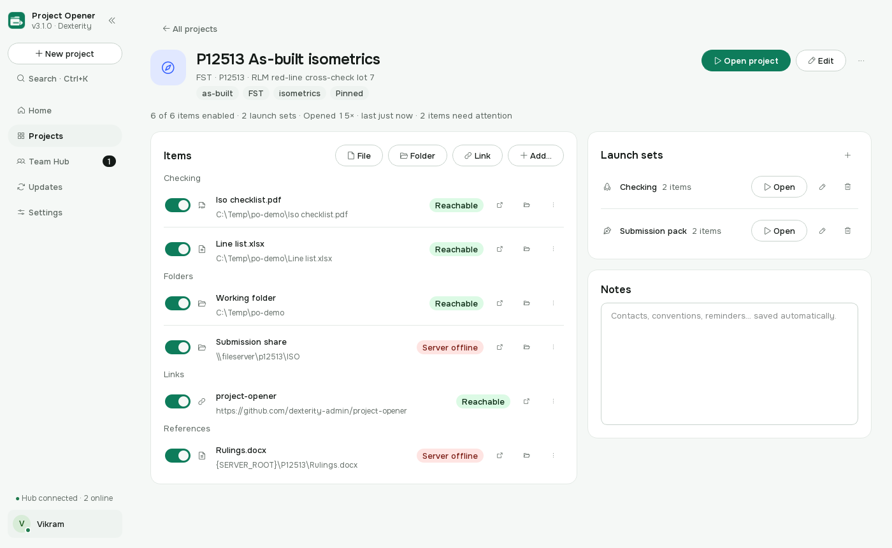
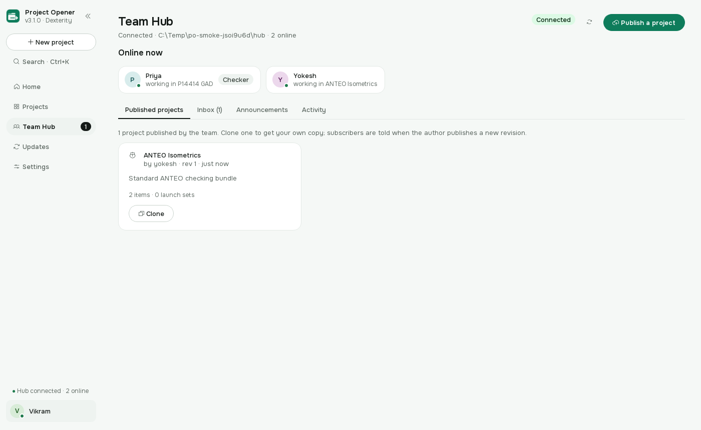
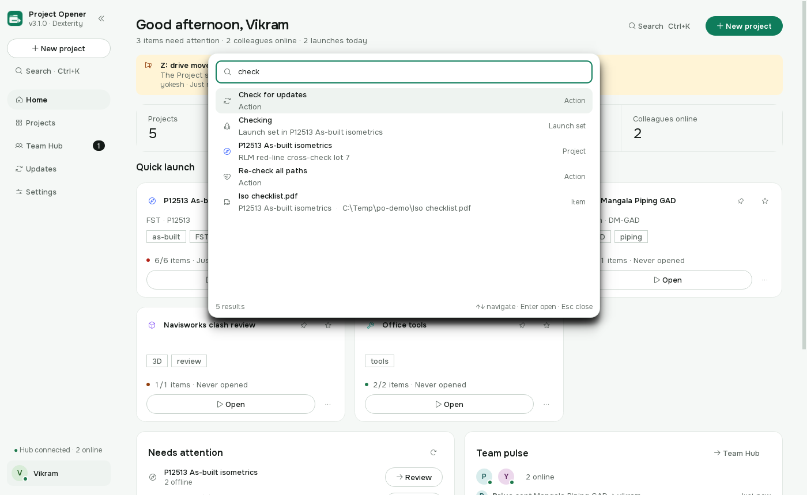
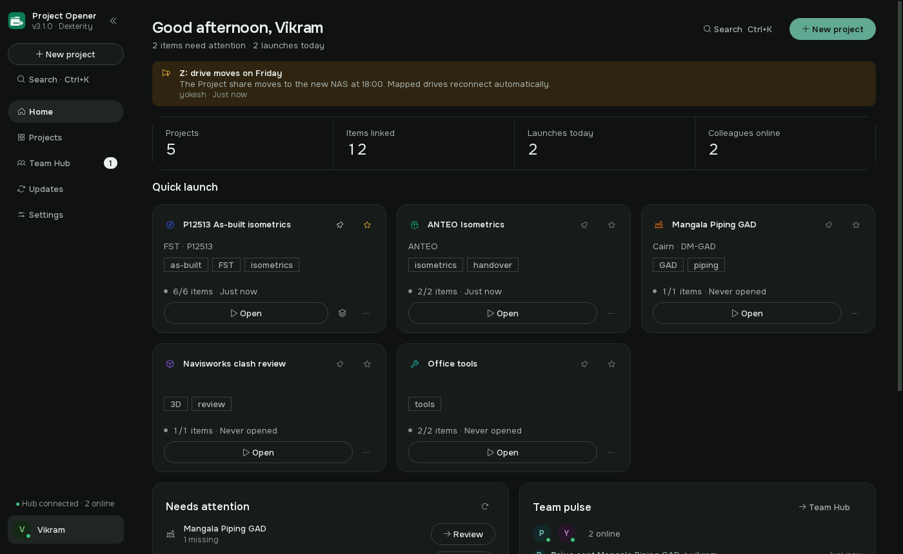
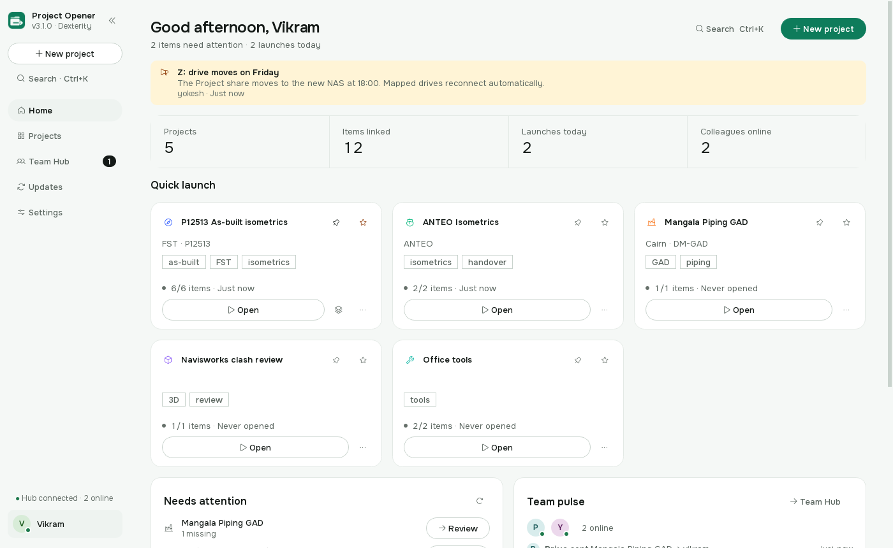

P12513 As-built isometrics
FST · P12513
6/6 items · opened 15× · just now1 missing
A Windows desktop app for the Dexterity piping office. It opens every drawing, folder, link and tool a job needs, together.
5 projects ready · 2 colleagues online · last launch just now
4 opened · 2 skipped · 1.8 sLaunch sets: Checking · Submission pack
A project is a list of paths. Before you click, the app checks each one and swaps drive letters for UNC names, so the same project opens on Priya’s desk as on yours.

Point the office at one folder on the NAS. That is the whole server.
See who is online. Publish a project; colleagues clone it and are offered each revision you publish afterwards. Send a project to a colleague’s inbox with a note. Post an announcement and it sits at the top of everyone’s Home. No server, no account, no internet.


Type three letters of a job number and press Enter. Projects, launch sets, folders and settings are all one keystroke away.
The app looks at the hub’s mirror before it looks anywhere else, so the whole office updates without touching the internet. An admin mirrors a release once.
On a connected PC it checks the latest release, verifies the SHA-256 of the download, installs silently and restarts where you left off.

Windows 10/11 · per-user install, no admin rights · or install from the office LAN hub
